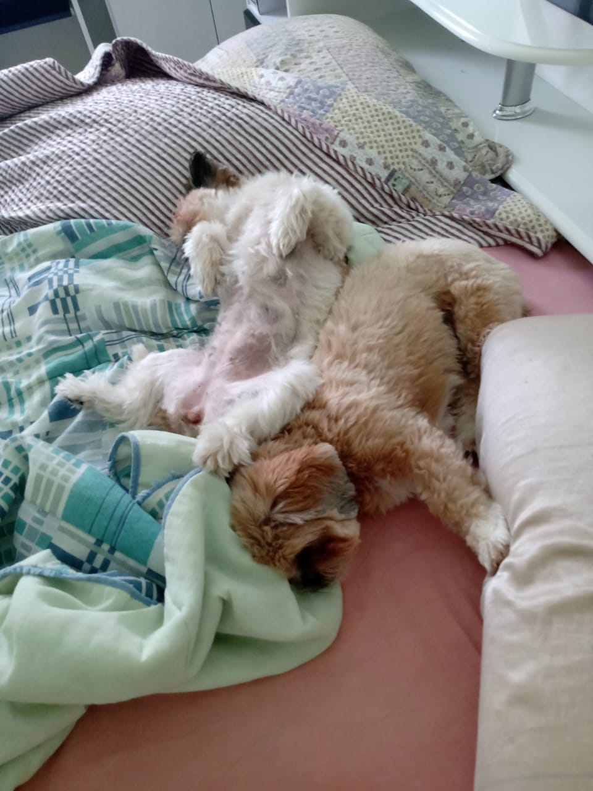
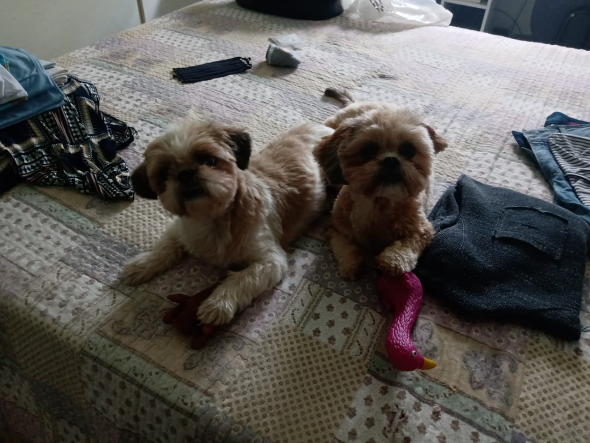
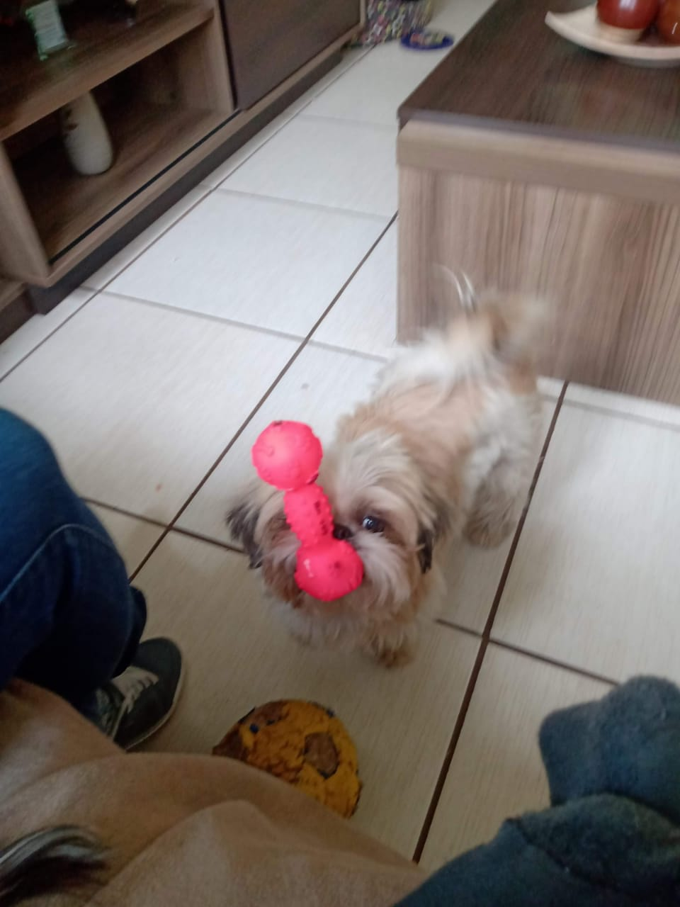

Cidade Natal
Minha cidade natal é São Sebastião do Paraíso, localizada na região sudoeste de Minas Gerais.

/i.s3.glbimg.com/v1/AUTH_59edd422c0c84a879bd37670ae4f538a/internal_photos/bs/2020/x/q/XDBOxnQLS7gEgNuAM6Sg/foto37.jpg)
Me chamo Luiz Fernando e tenho como apelido "Rabelo" - meu último sobrenome. Sou ingressante de 2020 do curso de Bacharelado em Ciências de Computação no ICMC - Instituto de Ciências Matemáticas e de Computação da USP - Universidade de São Paulo , localizada em São Carlos, SP.
Alguns de meus hobbies são:
Minha cidade natal é São Sebastião do Paraíso, localizada na região sudoeste de Minas Gerais.
Em São Sebastião do Paraíso, moram Meg e Milu
  